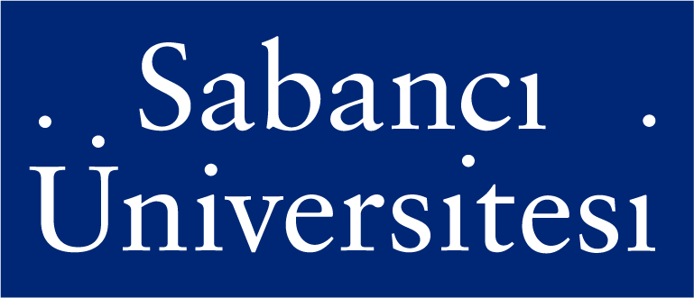
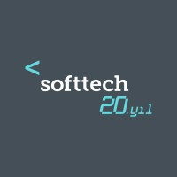
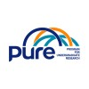
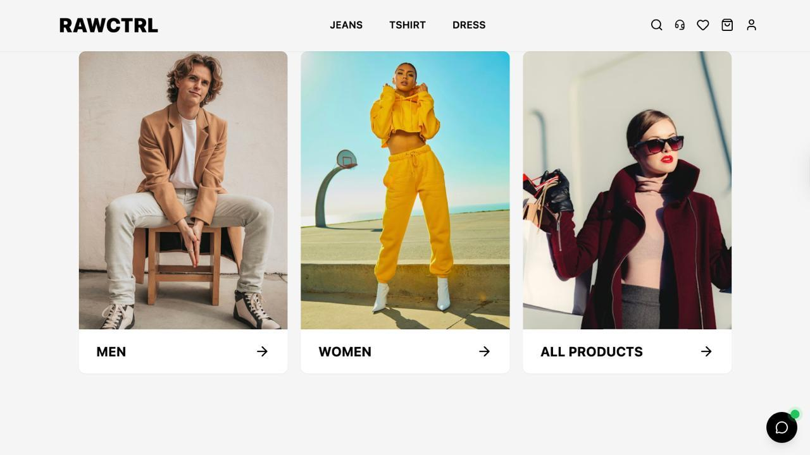
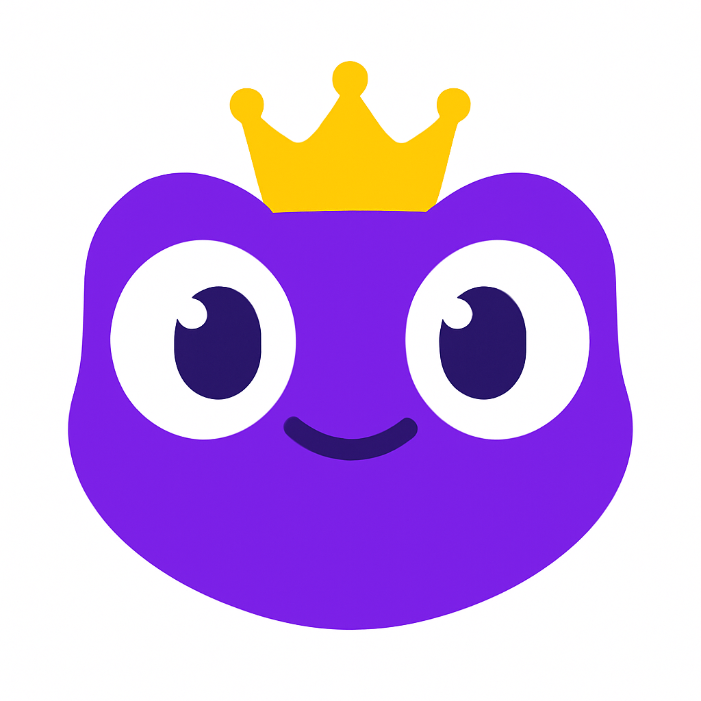
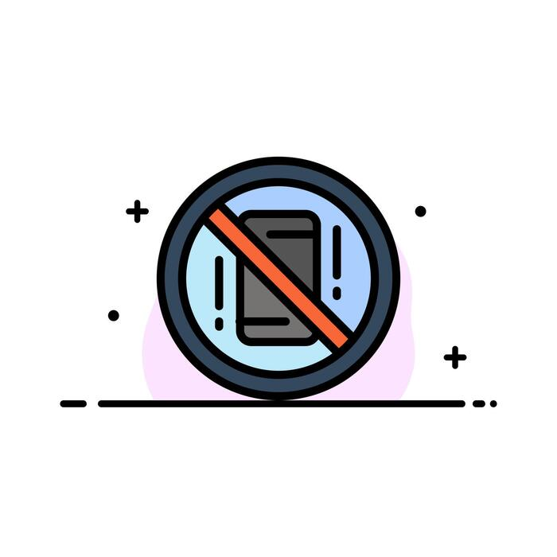
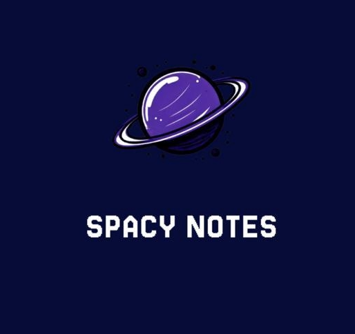
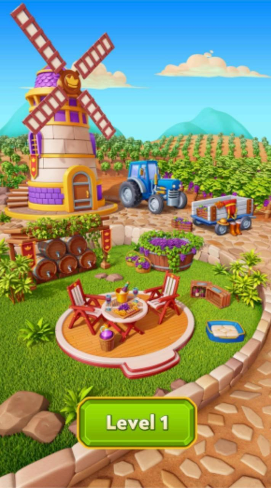
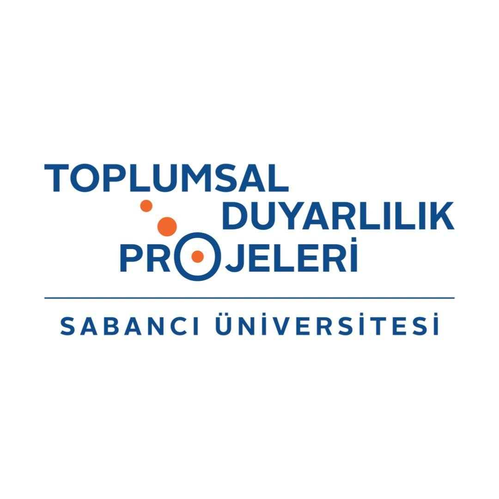

Life as an Ottoman Bank Clerk — Sabancı University
Collaborated with Prof. Selim Balcısoy to analyze data on Ottoman Bank clerks and develop an engaging series using artificial intelligence applications.
AIData Analysis
Software Engineer Intern | Computer Science and Engineering Student
I am a Computer Science and Engineering student at Sabancı University with an interest in software engineering, backend development, and building practical digital products. I have gained experience in enterprise software development and undergraduate research, while working with technologies including .NET, Spring Boot, Python, Flutter, and Docker.

B.Sc. in Computer Science and Engineering
Erasmus+ Exchange Student
Mathematics and Natural Sciences

Software Engineer Intern
Contributed to enterprise software development projects using .NET and Spring Boot within an agile development team.

Research Assistant
Developed graph-based algorithms and scanning strategies for route validation, evacuation, and aid-delivery scenarios.

Built backend services for a Spring Boot microservices-based e-commerce platform, covering catalog, cart/wishlist, checkout, refunds, invoice PDFs, and email notifications.

Developed a cross-platform English learning app with Flutter, featuring visual/contextual vocabulary learning, TTS pronunciation, quiz mode, mistake tracking, and movie phrase packs.

Analyzed daily lecture hours and phone pickup behavior using Python, Excel, and data visualization to identify patterns affecting digital focus.
Collaborated with Prof. Selim Balcısoy to analyze data on Ottoman Bank clerks and develop an engaging series using artificial intelligence applications.

Designed a cross-platform Flutter application that makes studying more engaging through collaborative notes, shared task management, group goals, and gamified focus workflows.

Created a match-3 puzzle game using the Unity game engine, designing the gameplay experience and implementing its interactive systems in C#.

Advisor
Guiding students through social sensitivity projects and helping them connect classroom learning with meaningful community work.
Mentor Supervisor
Supporting student mentors and helping create a welcoming, supportive university experience for the wider student community.
Exchange Student Buddy
Matched with exchange students, supported their adaptation to campus life and Istanbul, and helped them navigate academic and social life.
Peer Mentor
Guided first-year students through academic and social life, organized community-building activities, and helped mentees find the right resources.
Supervisor
Led field studies with students across environmental awareness, nursing-home volunteering, sign language, animal rights, disability inclusion, and human-rights initiatives.
President
Organizing lessons and events while building a welcoming community where students can connect with nature and unwind from academic life.